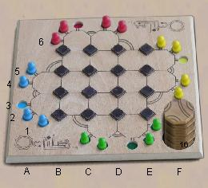
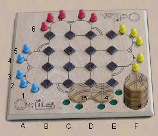
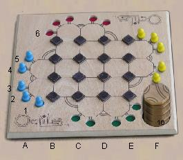
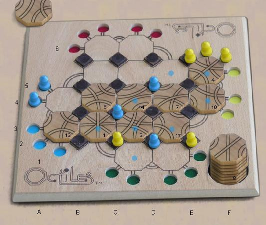
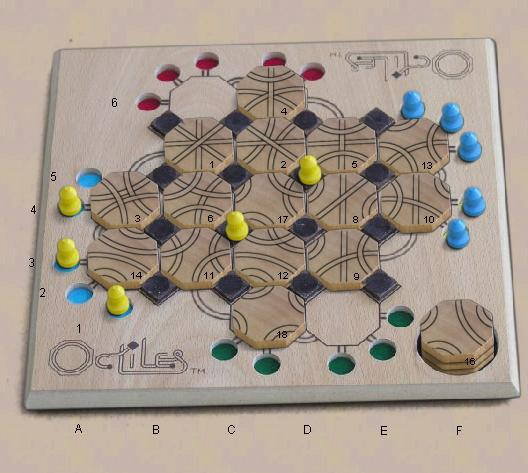

Starting Position is
as shown, with
all runners in a the starting space matching their color, and all 18
octagons stacked in random order, face up, the supply
well.. In three player games, one side is not used
and the
first two octagons are placed next to the unused wells. In
two
player games two opposite sides are not used. In a four
player
game, only four runners per color are used.

|

|

|
Four
player start
|
Three
player start
|
Two
player start
|
The Play:
turns rotate
clockwise around the board starting with Blue. On each turn,
the
player must do two things
- play the top tile from the stack of spares
- move one of his runners in a path that passes over
the tile
you just played, and ends at an empty stop or home
circle.
If you cannot do both, then you must pass. You can never just
place a tile, or move a runner without placing a tile, or move a runner
that does not use one of the paths on the new tile. If you
were
playing with a real board and real tiles, determining that no moves are
possible, and exactly which tile placements are legal, can be
difficult. One of the advantages of the computer is
that it
knows, and will show you what's legal, and won't let you make an
illegal move. Yah!
Special
considerations for Tile
placement:
- You can place the new tile either on an empty space,
or on
top of an existing tile, provided that the placement and rotation
permit at least one legal runner move.
- The legal spaces are
indicated by blue dots after you pick up the tile to
place..
- You can rotate the placed tile by clicking on the
edge of the tile.
- After a runner move is completed, if the tile
placement covered another tile, the covered tile is removed and placed
face up on the bottom of
the
spare
tile stack.
Special considerations for
Runner movement.
- If all of your home circles are currently filled,
you must
make a move to
vacate one of them if any such moves are possible.
- If no such
moves are possible, you can make any move that is available.
- Sometimes a path is available which starts and ends
at the
same stop.
This is a
legal move as long as the path passes over the
new tile.
- There are eight extra paths drawn on the board, which
can be used as part of any runner move.
- Once you leave a home circle, you may not re-enter
it. Once you enter a goal circle, you may not leave
it. You
may not use any other player's home circles.

|

|
Game
in progress. Yellow to move. The blue dots indicate where the
tile could be
placed legally.
|
Game
Over. Blue wins.
|
|